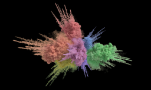
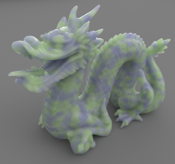

Spectral and Decomposition Tracking for Rendering Heterogeneous Volumes
This supplementary material contains an extended evaluation of different tracking approaches. Individual pages contain uncropped images that can be zoomed-in using the mouse wheel and flipped between using numeric keys.

Color Explosion
Color Explosion

Translucent Dragon
Translucent Dragon